Understanding liquid-fire
by @ianstarz
Denver Ember.js meetup 7-29-15
First, a few thoughts on design...
https://www.youtube.com/watch?v=vq_BcIFM8Rc
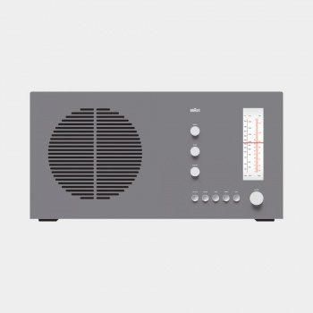
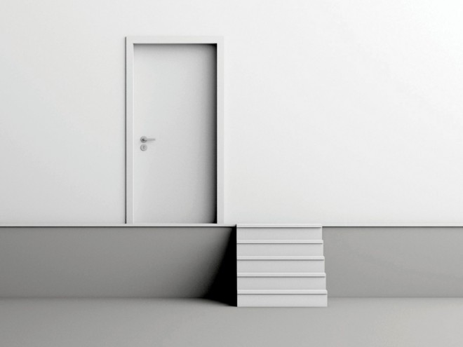
https://www.youtube.com/watch?v=vq_BcIFM8Rc
 http://www.selflanguage.org/_static/published/animation.pdf
http://www.selflanguage.org/_static/published/animation.pdf
 http://www.smashingmagazine.com/2013/10/smart-transitions-in-user-experience-design/
http://www.smashingmagazine.com/2013/10/smart-transitions-in-user-experience-design/
 http://www.smashingmagazine.com/2013/10/smart-transitions-in-user-experience-design/
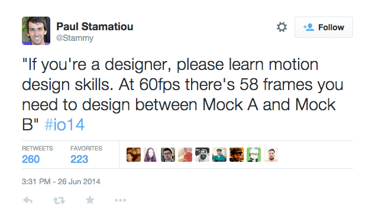
https://medium.com/@pasql/transitional-interfaces-926eb80d64e3
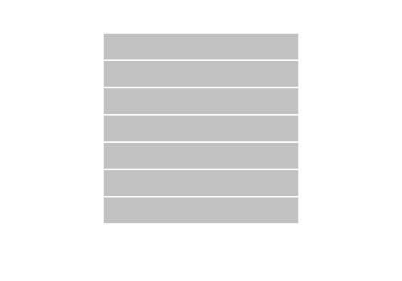
https://medium.com/@pasql/transitional-interfaces-926eb80d64e3
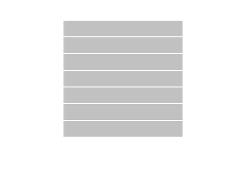
https://medium.com/@pasql/transitional-interfaces-926eb80d64e3
http://www.smashingmagazine.com/2013/10/smart-transitions-in-user-experience-design/
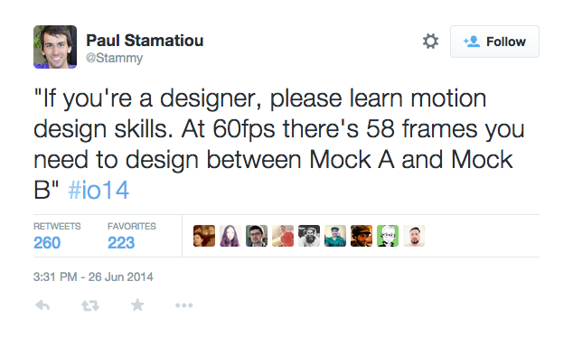
https://medium.com/@pasql/transitional-interfaces-926eb80d64e3
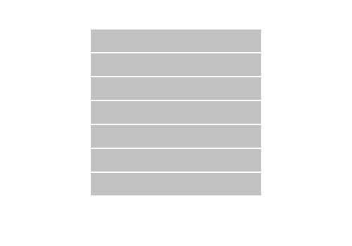
https://medium.com/@pasql/transitional-interfaces-926eb80d64e3
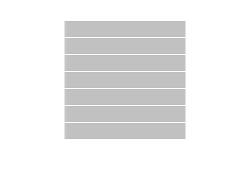
https://medium.com/@pasql/transitional-interfaces-926eb80d64e3
Not all fluff
 http://www.smashingmagazine.com/2013/10/smart-transitions-in-user-experience-design/
http://www.smashingmagazine.com/2013/10/smart-transitions-in-user-experience-design/
 http://www.smashingmagazine.com/2013/10/smart-transitions-in-user-experience-design/
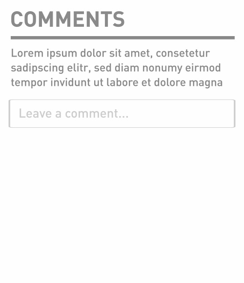
http://www.smashingmagazine.com/2013/10/smart-transitions-in-user-experience-design/
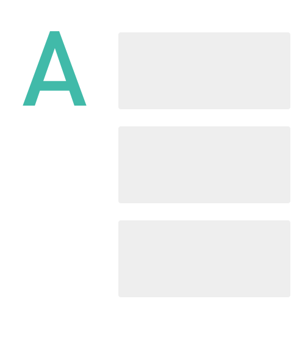
http://www.smashingmagazine.com/2013/10/smart-transitions-in-user-experience-design/
http://www.smashingmagazine.com/2013/10/smart-transitions-in-user-experience-design/
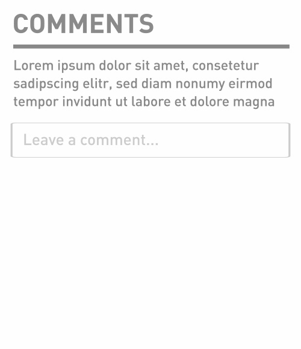
http://www.smashingmagazine.com/2013/10/smart-transitions-in-user-experience-design/
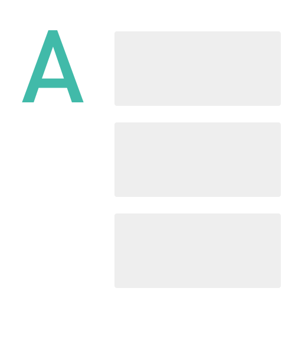
http://www.smashingmagazine.com/2013/10/smart-transitions-in-user-experience-design/
Let's not get too carried away though.
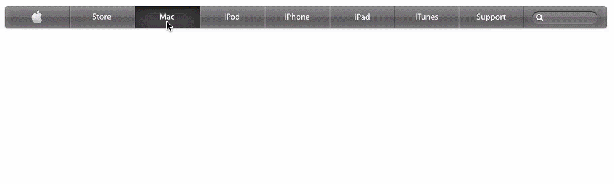
http://valhead.com/2013/11/25/what-are-your-transitions-saying/
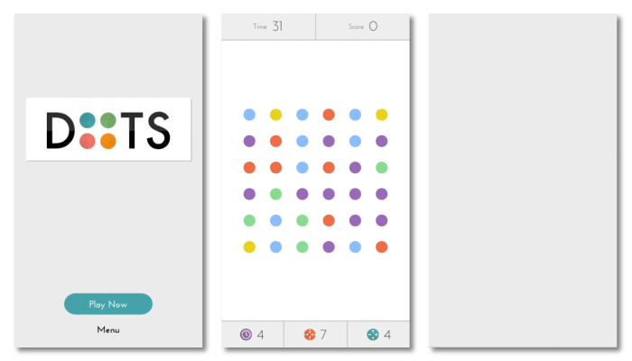
http://www.beyondkinetic.com/motion-ui-design-principles/
Material Design
Material is metaphor

Bold, graphic, intentional
Motion provides meaning

The meanings...
Causality
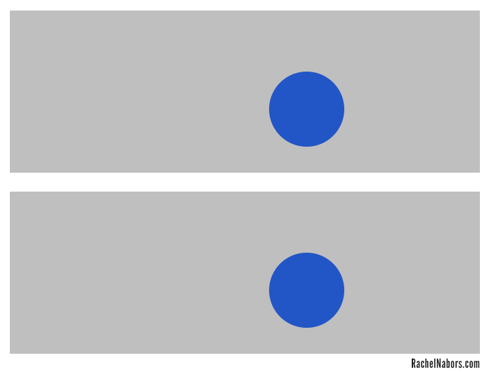
http://alistapart.com/article/web-animation-at-work
Feedback
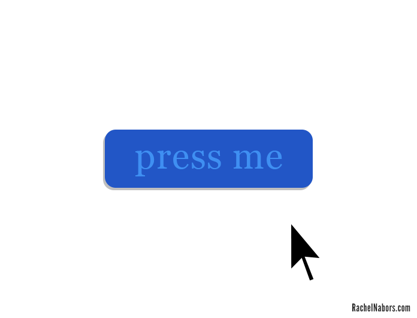
http://alistapart.com/article/web-animation-at-work
Progression
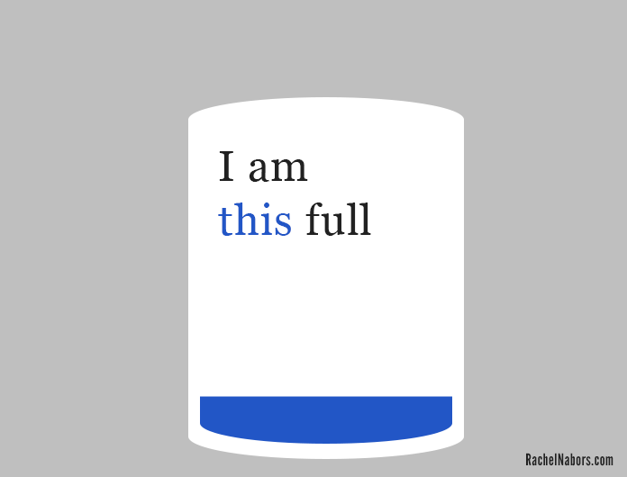
http://alistapart.com/article/web-animation-at-work
Relationships
http://alistapart.com/article/web-animation-at-work
How do we do this?
How do we do this in Ember with liquid-fire?
-
Use motion design to understand application state changes
-
To implement motion design in a way that plays nice with Ember
Animations in Ember without liquid-fire
/circle
/square
Without animation
/circle
/circle
/square
/square
Steps needed to animate
- Route knows it's deactivating (exiting the circle route)
- Router determines which route we're going to (the sqaure route)
- Service we implement saves the view we're about to tear down.
- Tear down route, but allow service to keep copy of the view in the outlet
- Render the new route, but hide and position the new element (the square)
- Animate the old value (the circle) off the screen to the left
- Animate the new value (the square) onto the screen from the right
- Tear down the old value (remove the circle from the DOM)
The main principles of liquid-fire
- Use template helpers to keep track of old and new values
- Defer to a transition map when asking should we animate, and if so, how?
Template helpers
The additional markup
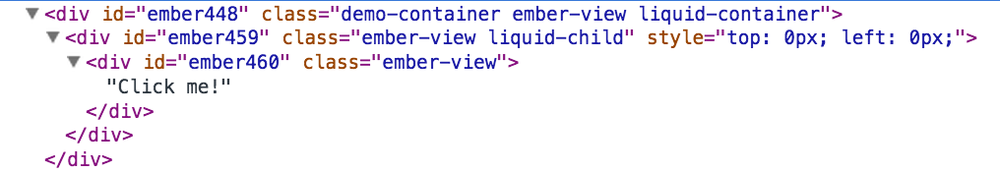
The additional markup
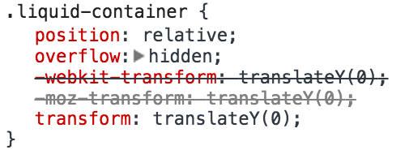
The additional markup
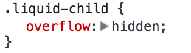
// app/transitions.js
export default function() {
this.transition(
this.fromRoute('circle'),
this.toRoute('square'),
this.use('toLeft')
);
}
// app/transitions.js
export default function() {
this.transition(
this.fromRoute('circle'),
this.toRoute('square'),
this.use('toLeft')
);
this.transition(
this.fromRoute('square'),
this.toRoute('circle'),
this.use('toRight')
);
}
// app/transitions.js
export default function() {
this.transition(
this.fromRoute('circle'),
this.toRoute('square'),
this.use('toLeft'),
this.reverse('toRight')
);
}